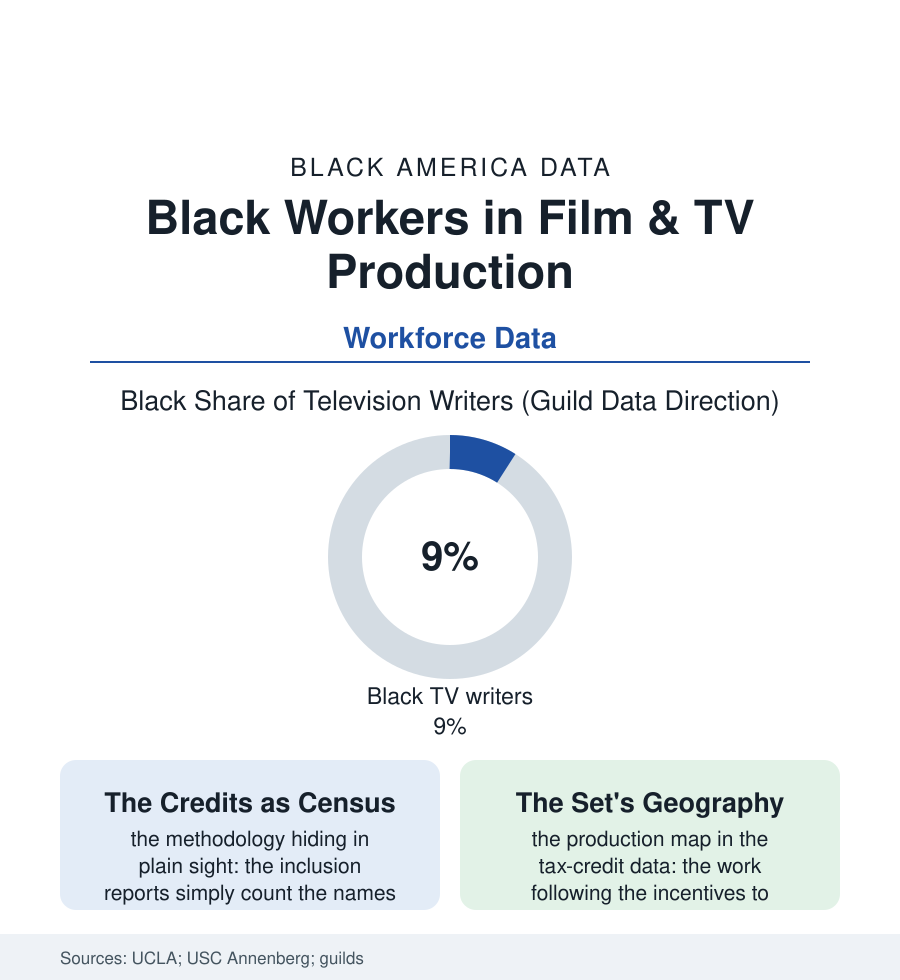

Black Employment
Below the Line: Black Crews in Film and Television
The credits roll for six minutes because the industry is a small city — and its neighborhoods, from the writers' room to the grip truck, sort by race as faithfully as any census tract. The production file.

Every film ends with its workforce published: six minutes of names, sorted by department, rolling over the dark. Read as data — as the inclusion reports of UCLA and USC have read them for a decade — the credits are a census of one of America's most coveted industries, and they describe a city whose neighborhoods integrate at wildly different speeds. This article reads the production file.
The Departments and Their Doors
The counts by craft draw the map: above the line, the progress file's familiar gradients (the directors' and writers' shares climbing from the low single digits across the report years — the showrunner tier, the industry's true executive class, lagging the writers' room it commands; the actors' casting nearer the population's share and the industry's favorite advertisement of itself); below the line, the crafts' older machinery (the union locals' apprenticeship and referral systems — the kin-and-crew networks through which the grip, electric, and carpentry departments have historically reproduced themselves, the newcomer's way in running through somebody's uncle in a way the diversity reports note with care), the hair and makeup departments' famous segregation-by-texture (the Black performer's chair time in the non-Black department becoming the era's emblematic grievance, the guild agreements' recent corrective language a direct result), and the post-production suites and VFX houses whose demographics the reports flag as the new frontier's old pattern. The money rows complete the structure: the production economy's wages excellent at the union core and precarious at the streamer-era margins, the work's project-to-project rhythm the gig file in costume, the 2023 strikes' settlement terms — the residuals and AI clauses — written substantially by a generation of below-the-line and writing workers for whom this atlas's files are biography. And presiding over the map is the file's geographical fact: the production centers' migration, incentive by incentive, to Georgia — where the Black production economy built, around one mogul's studio lot and a hundred independent productions, the industry's only majority-Black production city, its crews and department heads constituting the counterfactual the Hollywood data keep gesturing at: the ladder works where the ladder's owners look like the climbers.
Atlanta's rows deserve the expansion the map promises: the soundstages rising in a metro whose Black workforce staffs them at every level — the best boys and boom operators, the locations managers who know the neighborhoods because they are the neighborhoods, the catering companies of the business file feeding the sets — the cluster achieving, in the production data, what economists call thickness: the crew base deep enough that a production can hire an entire experienced local workforce, the fly-in department heads of the industry's first Atlanta decade steadily replaced by the homegrown. The incentive built the stages. The community built the crews.
The Pipeline and the Proof
The entry machinery is the file's contested frontier: the PA-to-department grind (the production assistant's hundred-dollar days as the industry's unpaid graduate school — its access rationed, like the internship file's, by the family subsidy), the guilds' and studios' fellowship and apprenticeship programs multiplying across the report years with their cohort photographs diversifying faster than their placement data, the film schools' graduate rows feeding the top of the pyramid while the crafts recruit from the shop floor — the industry's two doors admitting two different Americas. The audit era's numbers, taken whole, describe the inclusion reports' own careful verdict: movement at nearly every level, fastest where the counting is publicest — the leads on the poster, the directors at the festival — slowest where the power compounds quietly (the executives' greenlight tier, the department heads' hiring networks, the ownership of the stages and the post houses, the business file's shelf where this industry's Black entries remain mogul-shaped: individually enormous, structurally few). The file's last word belongs to the credits themselves, which keep rolling longer every decade as the industry globalizes — the names sorting, in their thousands, into a workforce document any viewer can audit from a couch. No other industry publishes its demographics in its product. The production file simply reads what the industry itself prints, in white type, over black.
Reading the Production Data
The production file is the employment section with a soundtrack: the same gradients, the same doors, the same Atlanta counterfactual — rendered in credits. The guilds publish the membership. The reports publish the count. The six minutes at the end of the film publish everything, for anyone who stays in the seat.
More in Black Employment
The Black Unemployment Rate: The Two-to-One Pattern
Black unemployment runs at roughly twice the White rate — 5.5 percent against 3.3 percent in annual averages — a ratio stable across five decades of federal data. How it is measured and why it persists.
Black Median Weekly Earnings: The 80-Cent Ratio
Black full-time workers earn a median of about $900 a week — roughly 80 cents for every dollar White workers earn. The BLS earnings data by group, gender, and occupation.
Black Labor Force Participation: Working at National Rates
Black labor force participation runs at roughly the national rate — and Black women participate at higher rates than White women. The BLS participation data.
Source: UCLA Hollywood Diversity Report; USC Annenberg Inclusion Initiative; IATSE and guild membership data; U.S. Bureau of Labor Statistics.